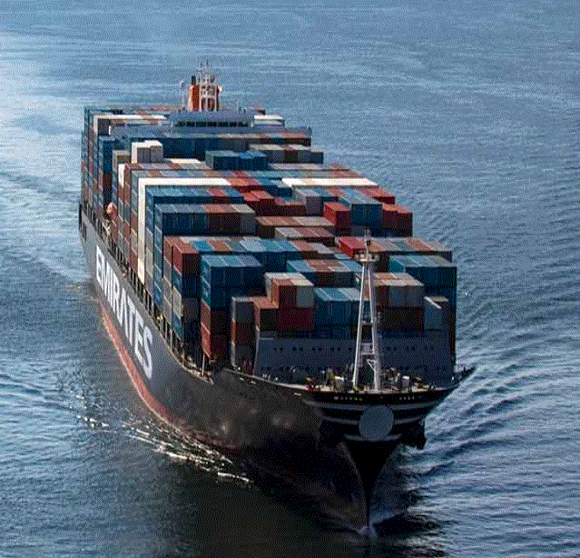
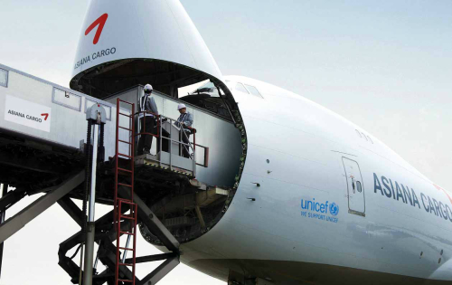
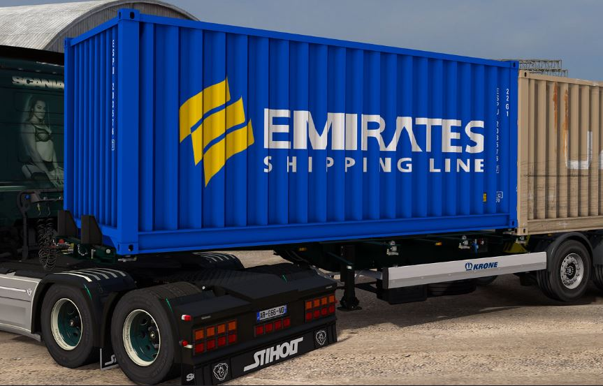
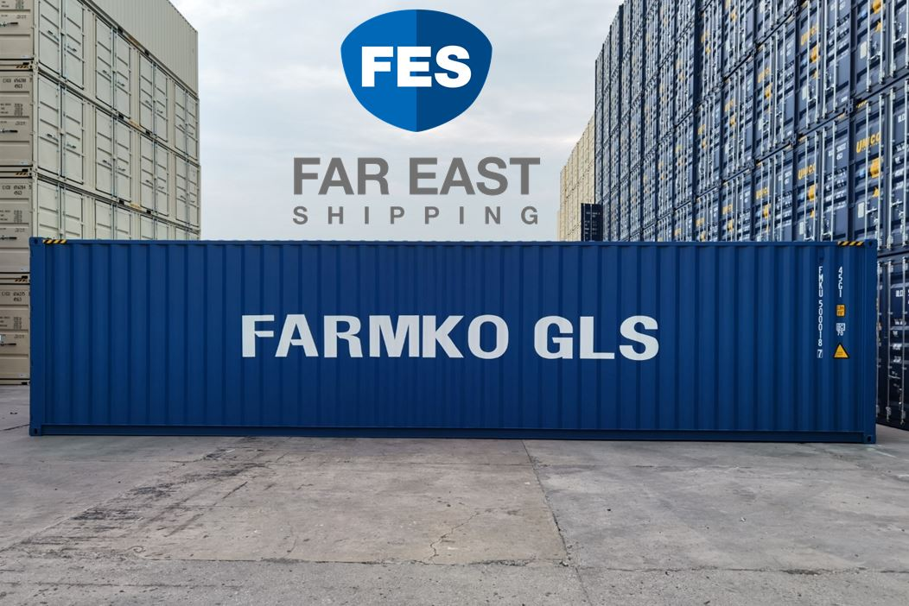

팜코지엘에스의 공지사항, 보도자료, 그리고 글로벌 물류 현장의 생생한 모습을 전합니다.
팜코지엘에스의 주요 안내와 소식을 확인하세요.
| 2025 | 부산신항 물류센터 본격 운영 안내 약 23,000㎡ 규모 종합 물류센터의 운영을 시작했습니다. |
|---|---|
| 상시 | Emirates Shipping Line 선적 스케줄 안내 중동·글로벌 항로 스케줄은 선사 공식 사이트에서 조회하실 수 있습니다. |
| 상시 | 견적 · 상담 문의 안내 운송 구간과 화물 정보를 남겨주시면 담당자가 신속히 회신드립니다. |
언론에 소개된 팜코지엘에스의 주요 소식입니다. 카드를 누르면 기사 원문으로 이동합니다.
해상·항공 운송부터 컨테이너 운영까지, 팜코지엘에스의 글로벌 물류 현장입니다.



